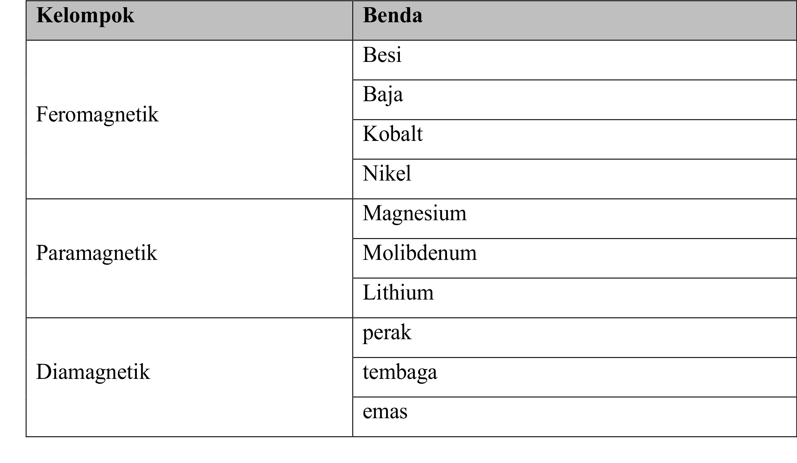

a. Sifat Magnet Bahan
Magnet adalah benda yang dapat menarik benda lain yang terbuat dari beberapa bahan logam seperti besi, baja, dan nikel. Namun ada beberapa benda yang tidak dapat ditarik oleh magnet seperti kaca kayu dan kertas. Gaya tarik magnet dapat menembus benda lain. Misalnya saat kamu menaruh besi di atas meja dan kamu bisa menggerakkan besi tersebut dari bawah meja dengan menggunakan magnet. Semakin besar sifat kemagnetan sebuah magnet maka akan semakin besar pula gaya tarik magnet tersebut.
Ada tiga kelompok klasifikasi benda berdasarkan interaksinya dengan magnet yaitu feromagnetik (benda yang ditarik kuat oleh magnet), paramagnetik (benda yang ditarik lemah oleh magnet), dan diamagnetik (benda yang tidak dapat ditarik oleh magnet).
Ada tiga kelompok klasifikasi benda berdasarkan interaksinya dengan magnet yaitu feromagnetik (benda yang ditarik kuat oleh magnet), paramagnetik (benda yang ditarik lemah oleh magnet), dan diamagnetik (benda yang tidak dapat ditarik oleh magnet).

Mari Mengamati
Pada video berikut ini kita akan melakukan percobaan untuk mengetahui benda-benda yang dapat ditarik oleh magnet.
1. Amatilah benda-benda yang dapat ditarik dan tidak dapat ditarik oleh magnet.
2. Amatilah dan kelompokkan benda-benda tersebut kedalam feromagnetik, paramagnetik, dan diamagnetik.
Video 3. Menguji benda-benda yang dapat ditarik magnet
Navigasi Video :
1. Amatilah benda-benda yang dapat ditarik dan tidak dapat ditarik oleh magnet.
2. Amatilah dan kelompokkan benda-benda tersebut kedalam feromagnetik, paramagnetik, dan diamagnetik.
Video 3. Menguji benda-benda yang dapat ditarik magnet

Mari Mencoba
Setelah mengamati demonstrasi di atas. jawablah latihan berikut ini untuk menguji pemahanmu.
Petunjuk :
- Tentukan apakah benda berikut dapat ditarik atau tidak.
- Kelompokan benda-benda tersebut kedalam feromagnetik, paramagnet, dan diamagnetik.
- tekan tombol cek untuk melihat hasil jawaban. Kolom pada tabel akan berwarna hijau jika jawaban benar dan berwarna merah ketika jawaban salah.
| Benda | Dapat Ditarik Magnet | Kelompok |
|---|---|---|
| Paku besi |
|
|
| Pensil (kayu) |
|
|
| Polpen (plastik) |
|
|
| Gunting (besi) |
|
|
| Sendok (besi) |
|
|
| Tembaga |
|
|
| Magnesium |
|
|
| Lithium |
|
|

Kesimpulan
Ada beberapa benda yang dapat ditarik dan tidak dapat ditarik oleh magnet. Seperti percobaan yang telah kita lakukan. Benda yang dapat ditarik kuat oleh magnet disebut feromagnetik, menda yang ditarik lemah oleh magnet disebut paramagnetik dan benda yang tidak dapat ditarik oleh magnet disebut diamagnetik.
